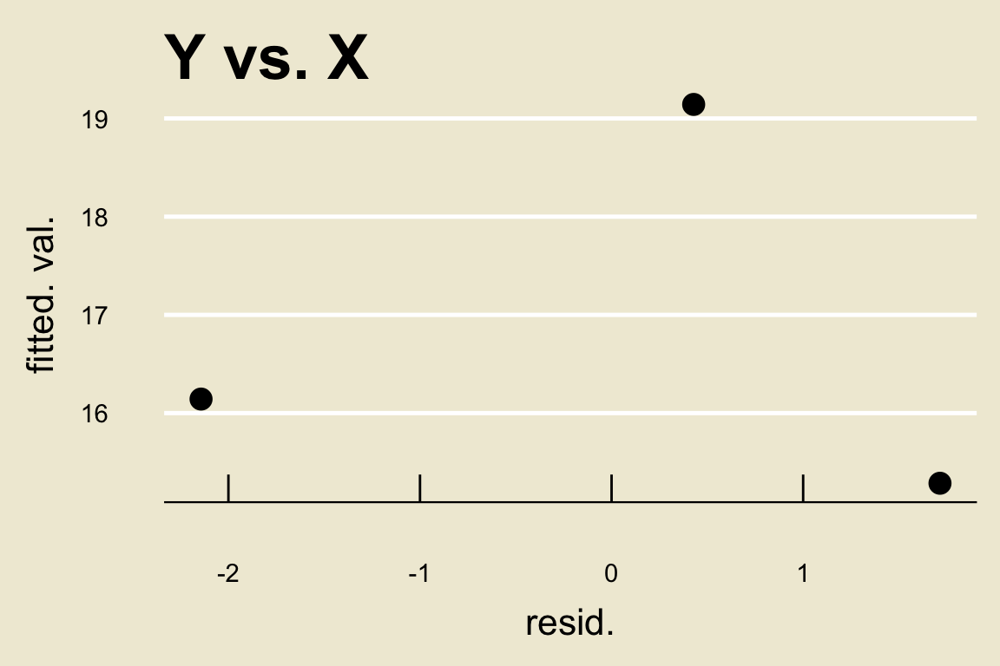
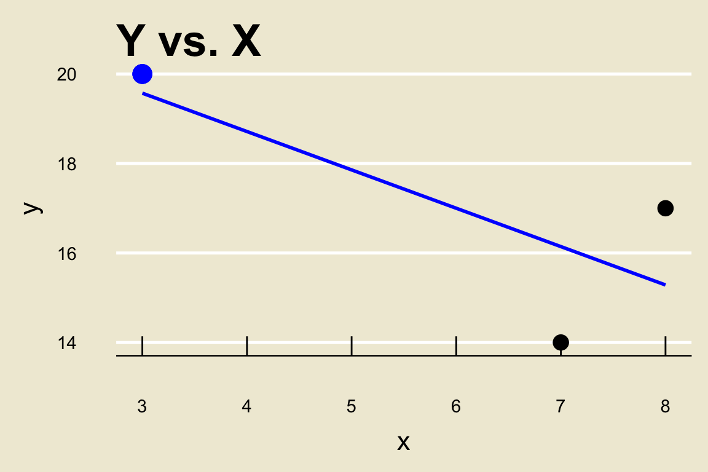
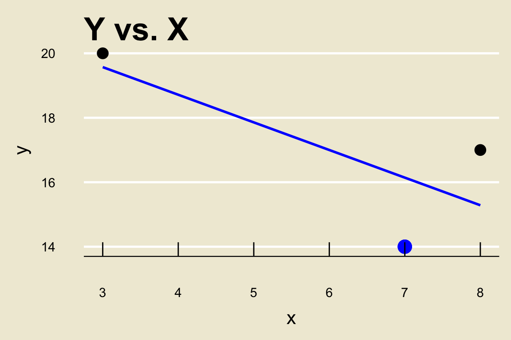
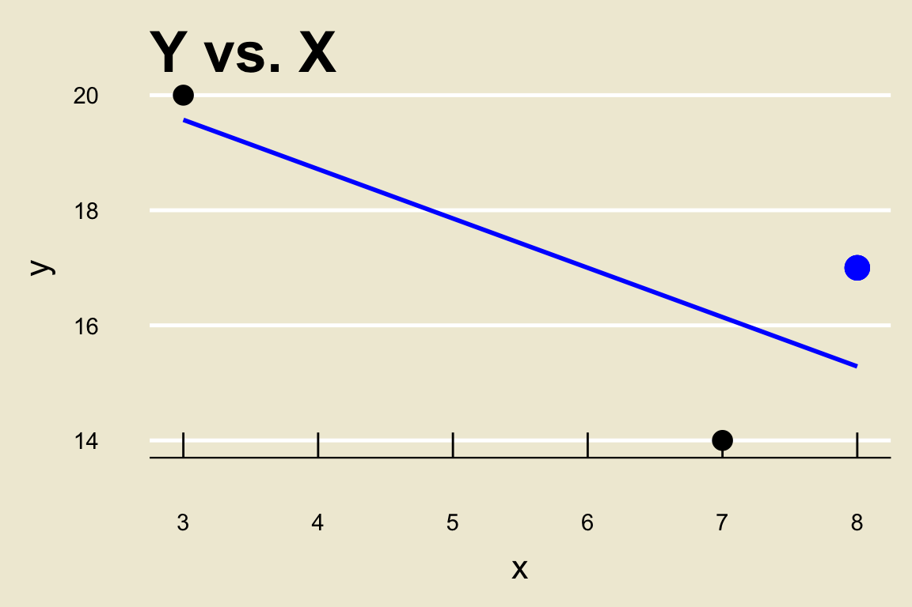
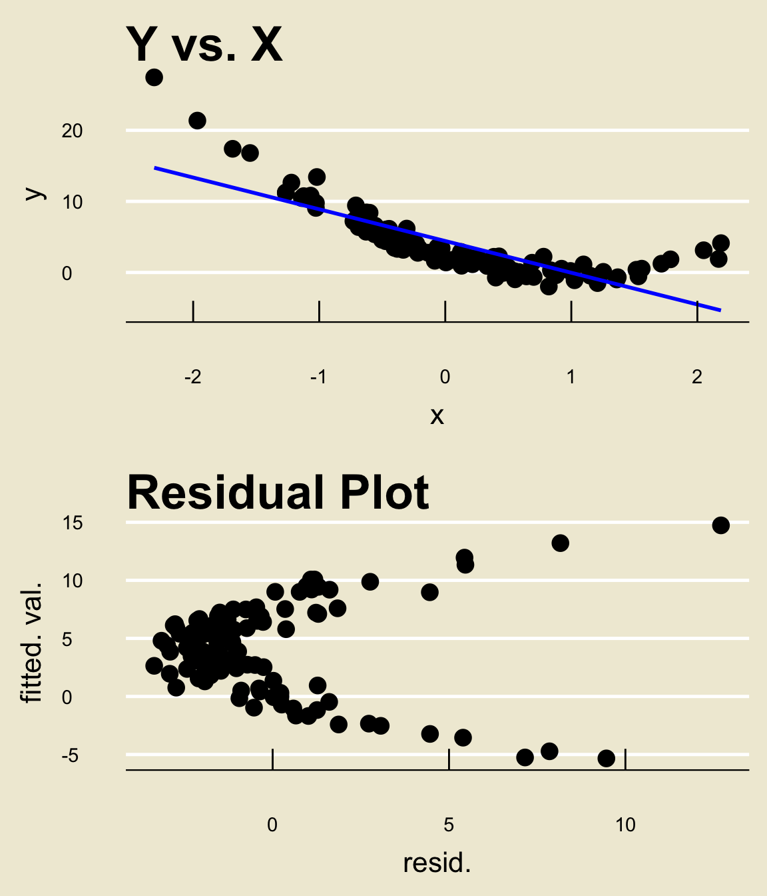
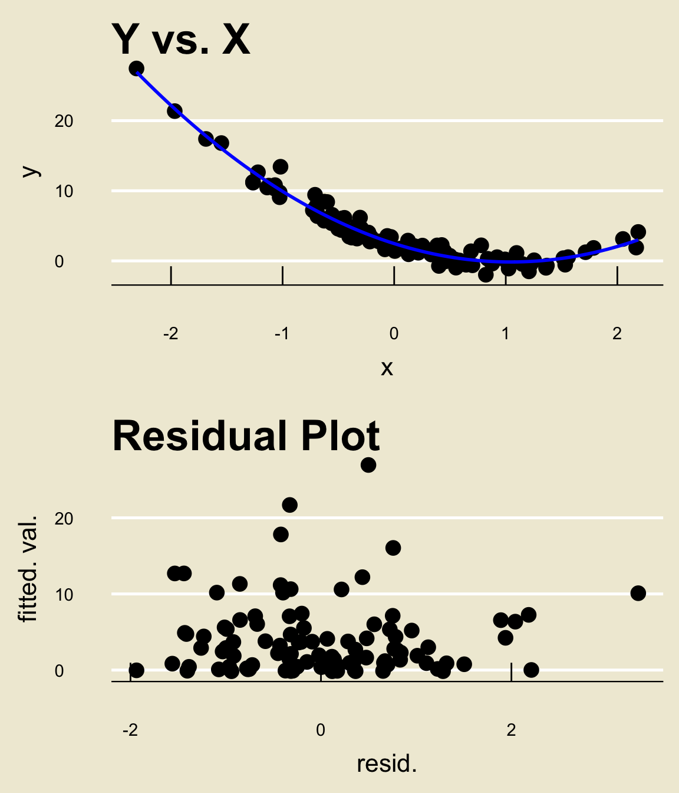

PSTAT 5A: Lecture 22
Regression Diagnostics, and Sampling Procedures
Mallory Wang
2024-07-23
Regression Diagnostics
Recap
Given observations \(\{(x_i, \ y_i)\}_{i=1}^{n}\) on a response variable
yand an explanatory variablex, we adopt the model \[ \texttt{y} = f(\texttt{x}) + \texttt{noise} \]Assuming a linear signal function, we obtain a model \[ \texttt{y} = \beta_0 + \beta_1 \cdot \texttt{x} + \texttt{noise} \] and we have previously seen how to use our data to obtain good estimates \(\widehat{\beta}_0\) and \(\widehat{\beta}_1\) of \(\beta_0\) and \(\beta_1\), respectively.
A natural question arises- how can we assess how good our fit is?
To answer this question, it turns out we need to be a little more specific in our model.
Modelling Noise
Let’s start off by rewriting our model as \[ \texttt{y} = f(\texttt{x}) + \varepsilon \] where we use \(\varepsilon\) to now denote our noise.
The reason we do this is we can now rewrite the model to be in terms of the individual observations \(x_i\) and \(y_i\) (as opposed to the variables
xandy): \[ y_i = f(x_i) + \varepsilon_i \] where \(\varepsilon_i\) represents the noise associated with a single observation.In a wide array of situations, it turns out to be a good idea to assume normally-distributed noise; that is, we often assume \(\varepsilon_i \sim \mathcal{N}(0, \ \sigma^2)\) for all indices
i.
Modelling Noise
Again, crucially, we never get to see exactly what the observed value of \(\varepsilon_i\) is for any particular
i.However, if we rewrite our model as \[ \varepsilon_i = y_i - f(x_i) \] then we see that we actually already have a pretty good estimator for \(\varepsilon_i\)- the
ith residual!- That is, \[ e_i = y_i - \widehat{y}_i \]
Residual Plots
This leads us to one of the most important regression diagnostic tools: residual plots.
Points in a residual plot have
x-coordinate given by the value of the residual andy-coordinate given by the corresponding fitted value.Let’s do an example quickly to illustrate how to construct one by hand, using our toy example from last lecture: \[\begin{align*} \boldsymbol{x} & = \{3, \ 7, \ 8\} \\ \boldsymbol{y} & = \{20, \ 14, \ 17\} \end{align*}\]
Residual Plots
- The fitted value of the blue point above is \((155 - 6 \cdot 3) / 7 = 19.57143\) and its corresponding residual is \(20 - 19.57143 = 0.42857\), meaning one of the points on our residual plot will be \[ (0.42857, \ 19.57143) \]
Residual Plots
- The fitted value of the blue point above is \((155 - 6 \cdot 7) / 7 = 16.14286\) and its corresponding residual is \(14 - 16.14286 = -2.14286\), meaning one of the points on our residual plot will be \[ (-2.14286, \ 16.14286) \]
Residual Plots
- The fitted value of the blue point above is \((155 - 6 \cdot 7) / 7 = 15.28571\) and its corresponding residual is \(17 - 15.28571 = 1.71429\), meaning one of the points on our residual plot will be \[ (1.71429, \ 15.28571) \]
Residual Plots
- Hence, the residual plot for the above regression would be
Residual Plots
One of the main purposes of examining residual plots is to see whether or not there are any remaining patterns in the data after fitting a model.
Remember- residuals are meant to mimic the noise apparent in our observations.
Hence, if our model fit truly capture all of the relationship present in the data, we would expect the residuals to not display any noticeable pattern.
This leads us to how we use residual plots:
Tip
If the residual plot displays a pattern, then the fitted model is not capturing all of the relationship present in the data.
Residual Plots

Residual Plots

Residual Plots

Other Diagnostics
There are, of course, many other diagnostics one can perform after performing regression.
Even within the residual plot, there are other things to look for (things like homoskedasticity and heterodskedasticity)
There are also numerical tools we can use to diagnose our model performance.
I save these for your future courses to cover.
Where Does Data Come From?
Where Does Data Come From?
Throughout this course, we have been using various pieces of data.
One thing we should discuss, as good Data Scientists, is where this data actually came from?
- Who collected it? How was the data collected? Who were the subjects included in the data?
We will now begin to discuss some possible answers to these questions, as well as some practical strategies for collecting data of our own!
The Research Process
Indeed, most experiments and studies begin with some sort of question.
- For example: “does this new drug truly reduce blood pressure?”
- Or: “is smoking really linked with higher rates of lung cancer?”
- Or: “what is the average mercury content in swordfish in the Atlantic Ocean?”
- Or: “over the past 3 years, what is the average number of people that have been admitted into the PSTAT major?”
The next step is something we’ve actually done several times in this class already: identify the population of interest!
- Can anyone tell me what the populations associated with the above research questions are?
Sampling Procedures
Now, we need the most crucial piece of all: data!
- Specifically, we need to collect our data.
This will entail taking a sample (or possibly many samples) from our population.
- This is why it’s important to know what our population is- so we know where to start taking samples from.
There are many ways to take a sample!
One way is to take what is known as a simple random sample (or SRS, for short).
A simple random sample is akin to assigning a unique number to each person in the population, and then picking some subset of these numbers uniformly at random.
- Crucially, in this way, each member of the population has an equal chance of being included in the sample.
Sampling Procedures
Now, Simple Random Samples do have some potential downsides.
As an example, let’s consider the following situation: suppose our population is the workplace at some company (which we will call Company X).
Say we are interested in determining whether or not there is systemic racism present in Company X.
To determine whether or not this is the case, we might take a sample and administer a survey (we’ll talk more about surveys in a bit).
Can anyone tell me a potential problem with this setup if we were to take a Simple Random Sample?
- What if I tell you, for example, that 80% of people in this company are Caucasian and only 20% are not?
Sampling Procedures
That’s right- we run the risk of obtaining a biased sample.
Said differently: if we take an SRS of employees at this company, there is a high probability that this sample will contain a disproportionately larger number of Caucasians than non-Caucasians.
- This would almost certainly affect the results of our survey!
One way to remedy this would be to perform what is known as in which we first divide the population into several strata (i.e. groups), and then take an SRS from each stratum.
This has the benefit of ensuring a roughly equal number of participants from each stratum, but has the downsides of being very dependent on the strata that are created.
That is, sometimes it won’t necessarily be obvious how to divide the population!
Sampling Procedures
Another type of sampling is called cluster sampling. Similar to stratified sampling, the population is first divided into several groups (now called clusters). But, instead of taking an SRS from every cluster we instead take an SRS of clusters and then take an SRS from each included cluster
Note, then, that we are not including every cluster in our sample in this way of sampling.
This has the benefit of being (potentially) cheaper, but has the (obvious) downside of potentially skewing results due to the lack of certain clusters.
By the way, this is slightly different than the notion of Cluster Sampling outlined in the textbook; the textbook calls the above scheme “multistage sampling”. However, this term is not widely used, and as such we will simply refer to the above as “Cluster Sampling”, as most statisticians do.
Example
- Let’s consider an example from the textbook:
Example (credit to OpenIntro Statistics)
Suppose we are interested in estimating the malaria rate in a densely tropical portion of rural Indonesia. We learn that there are 30 villages in that part of the Indonesian jungle, each more or less similar to the next. Our goal is to test 150 individuals for malaria. What sampling method should be employed?
At surface level, an SRS may seem tempting.
- After all, the villages are “more or less similar to the next”.
However, an SRS will likely contain individuals from all (or certainly most) of the villages.
This would require someone to actually visit these villages to collect data, which will be incredibly costly.
As such, an SRS is probably not a good idea.
Example
Indeed, cluster sampling seems to be the way to go.
Specifically, we could assign each village to its own cluster, then select some number of villages (say, maybe 15 or so) randomly, and then select some number of people (say, 10 or so) from each of the selected villages.
Because the villages are “more or less similar”, the people included in our sample would likely not have many obvious differences (in the context of the experiment) and we would believe our sample to be relatively representative.
Additionally, the experimenter (or a volunteer) would only need to visit 15 villages instead of all 30.
Of course, we would need to modify our statistical tools slightly to reflect the fact that our sample was actually collected via a clustering scheme- such modifications (though not too challenging) are outside the scope of this course.
- Right now, I’m merely trying to get us to think about the practicalities of data collection!
Bias
Even if we end up with a fairly representative sample, there are ways bias can creep in.
Suppose we administer a survey to a representative sample of people.
It is not guaranteed that everyone in our sample will actually fill out the survey; even if a particular individual does attempt the survey, there is no guarantee they will finish the entirety of the survey.
This can lead to gaps in our data with respect to certain demographics, which is itself a form of bias.
We call this non-response bias.
Bias
Another sampling strategy that is prone to bias is known as convenience sampling.
We can think of convenience sampling as any sort of sampling scheme where individuals who are easily accessed have a higher chance of being included in the sample.
For example, suppose we poll students about their views on the housing crisis in Santa Barbara.
If we conduct this poll at UCSB, we are more likely to get UCSB students and much less likely to get, say, UCLA students.
Similarly, if we conducted our study at UCLA, we would be more likely to include UCLA students than, say, NYU students.
Bias
So, why would we ever use a convenience sample?
Well, as the name suggests- it is convenient!
Convenience samples are often both the easiest to obtain, as well as the cheapest.
Having said that, most statisticans agree thate convenience samples are bad. This is due to what is known as the garbage in garbage out philosophy.
Loosely speaking, the “garbage in garbage out” philosophy states that our results are only as good as our data- even the most sophisticated statistical models will output nonsensical or skewed results if we are feeding them nonsensical or skewed data!
Another Distinction
There is another distinction we should be aware of: the difference between an observational study and an experiment.
In an observational study, no treatment is ever explicitly applied (or withheld).
This is in contrast to an experiment, in which researchers assign treatments to cases.
For example, suppose a researcher is interested in determining the relationship between cancer rates and tanning beds.
In an experiment, the researcher would take some sample of volunteers, split them into groups, and assign one group to tan regularly and another to not use tanning beds at all for the duration of the study.
- At the end of the study, the researcher would collect data and analyze.
Another Distinction
If instead the researcher were to conduct an observational study, they might take some sample of people who already use tanning beds, analyze cancer rates, and repeat for a sample of people who do not use tanning beds.
- Note that in this case, the experimenter has not explicitly assigned a treatment (i.e. using a tanning bed) to either group. In a sense, the groups were formed around the treatment.
Naturally, experiments come with all sorts of ethical considerations.
For instance, in trying to determine the relationship between cancer rates and smoking, nobody would actually force a group of participants to smoke, just for the purposes of an experiment.
This is one “pro” in favor of observational studies- the experimenter is not responsible for forcing a group of people to do (or not do something) they wouldn’t want to.
Another Distinction
Of course, observational studies are not perfect either.
Specifically, observational studies cannot be used to identify causal relationships; they can only ever identify associations (or a lack thereof).
Remember that assocations are not the same things as causation!
- So, just because an observational study indicates a link between smoking and increased lung cancer rates, that is not sufficient justification to say that smoking causes increased lung cancer rates. To make that causal claim, an experiment would need to be conducted.
Example
Example (OpenIntro Statistics, 1.19)
A large college class has 160 students. All 160 students attend the lectures together, but the students are divided into 4 groups, each of 40 students, for lab sections administered by different teaching assistants. The professor wants to conduct a survey about how satisfied the students are with the course, and he believes that the lab section a student is in might affect the student’s overall satisfaction with the course.
- What type of study is this?
- Suggest a sampling strategy for carrying out this study.
Solutions
Because treatment has neither been administered nor withheld by the researcher, this is an example of an observational study.
In this case, stratified sampling would likely be a good idea, with each lab section assigned to a stratum. This ensures each stratum (lab section) is represented in the sample.
Longitudinal vs. Cross-Sectional Studies
Suppose a particular drug claims to significantly reduce blood sugar levels. Consider the following two scenarios:
An SRS of 100 people is taken from a certain demographic, and divided randomly into two groups: group A and group B. Group A is administered the drug and Group B is not administered the drug. After a week, the researcher collects data on the blood sugar levels of the two groups.
An SRS of 50 people is taken from a certain demographic. These 50 people have their blood sugar levels recorded, and are then all administered the drug. A week later, the participants have their blood sugar levels recorded.
Longitudinal vs. Cross-Sectional Studies
Note that both of these situations seemingly end up with the same data: 50 measurements of pre-treatment blood sugar levels, and 50 measurements of post-treatment blood sugar levels.
However, we can see that these two studies are fundamentally different.
In the first study, people were divided into two groups (called the treatment and control groups, respectively).
In the second, the same 50 individuals were tracked over time.
This is an example of the distinction between a cross-sectional study and a longitudinal study.
Longitudinal vs. Cross-Sectional Studies
In a longitudinal study, the same set of individuals is tracked over time.
In a cross-sectional study, individuals are divided into several groups.
Notice that data in longitudinal studies necessarily possess serial correlation: that is, measurements are correlated!
- Pre-treatment measurements for, say, John, are very likely correlated with John’s post-treatment measurements since these measurements were still collected from John!
Principles of Experimental Design
Let’s quickly return to our distinction between observational studies and experiments.
Suppose it is decided that we want to conduct an experiment.
We then need to think very carefully about how we want to design our experiment.
This leads us into our final discussion for this course: Experimental Design.
Treatment vs. Control Groups
First, let me make clear the distinction between treatment and control groups.
Treatment groups are groups to which one or more treatments is/are administered.
- There can potentially be multiple treatment groups; for example, we could have 4 groups each testing a different medicine
Typically, we always leave at least one group “alone”; i.e. one group to which no treatment is administered. This group is called the control group.
- It is also possible to have multiple control groups!
Experimental Design
Experimental Design loosely refers to the principles of and procedures related to setting up an experiment.
I won’t go into this in too much detail.
I do highly encourage you to read Section 1.4 of your textbook, as it provides a very nice summary of some of the main tenants of experimental design.
Remember - as Data Scientists, it is very important we understand our data as much as possible before performing analyses.
- Part of knowing our data is knowing how it was collected, and, indeed, how we might go about collecting our own!